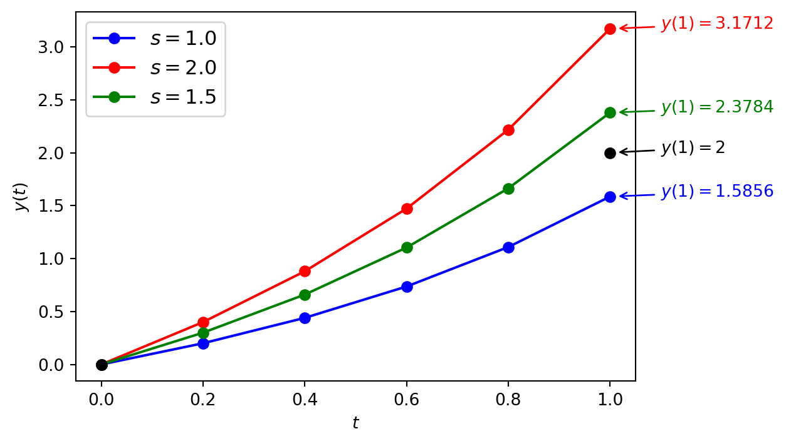
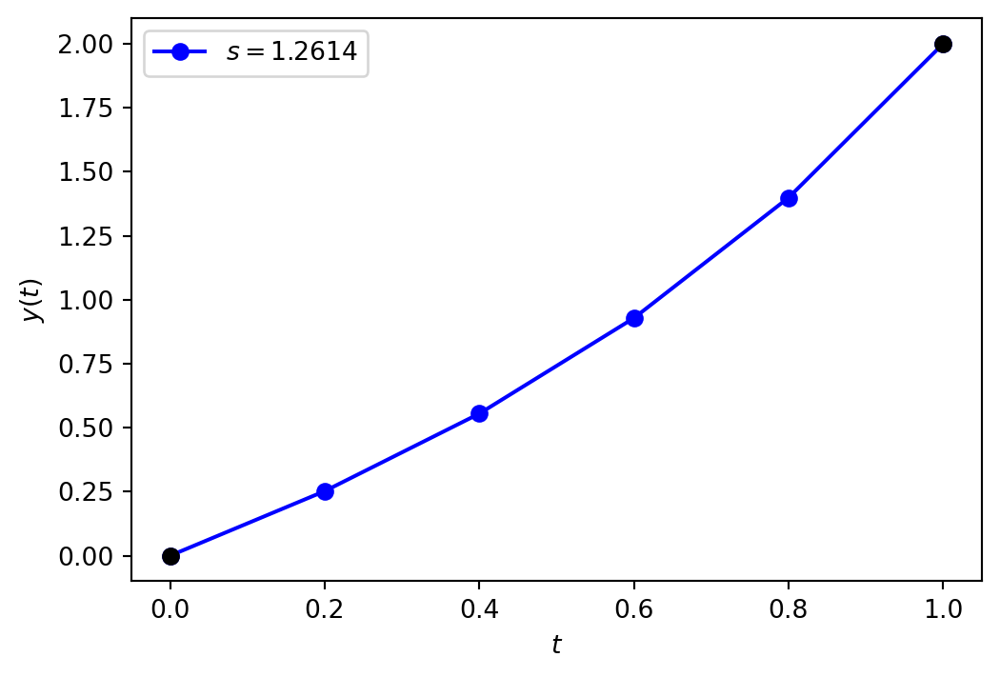
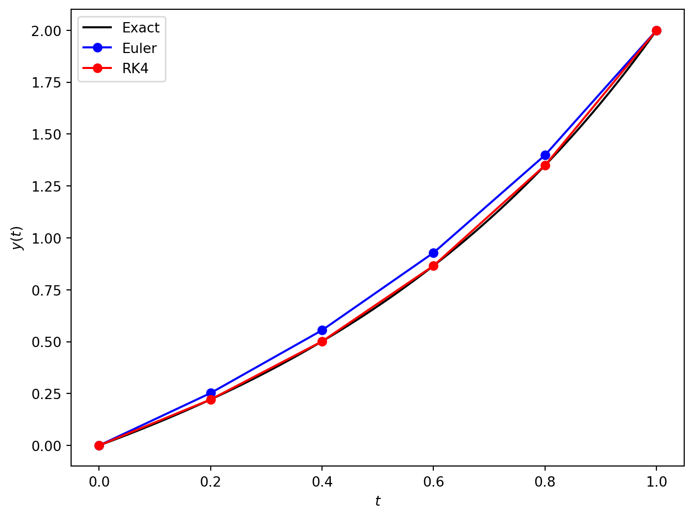
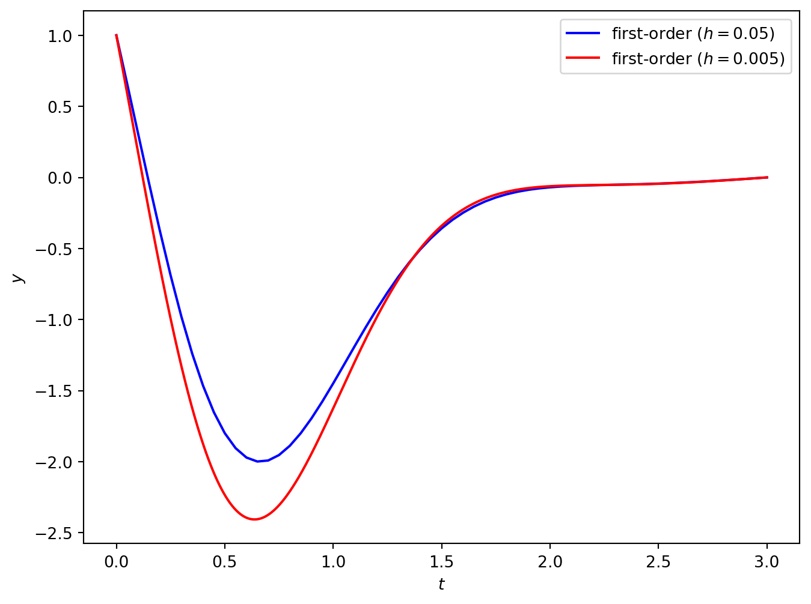
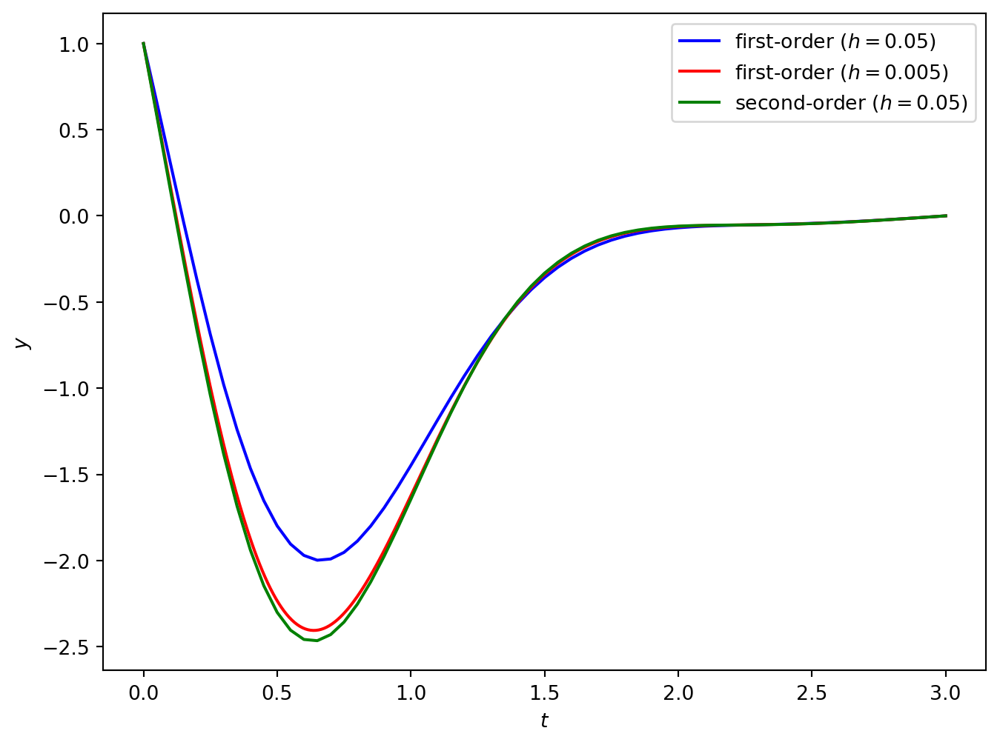

6G6Z3017 Computational Methods in ODEs
A two-point boundary value problem is a second-order ODE where the solutions at the lower and upper boundaries of the domain are known
\[y'' = f(t,y),\qquad t\in [t_{0}, t_{\max}],\qquad y(t_{0}) = a ,\qquad y(t_{\max}) = b,\]
for some known values \(a\) and \(b\).
These differ from Initial Vale Problems (IVPs) where we only know the solution at the initial value for \(t\).
A BVP can have a unique solution, no solution or an infinite number of solutions.
Consider the following boundary value problem
\[ y'' + 4y = 0, \qquad y(0) = 1, \qquad y\left(\dfrac{\pi}{4}\right) = 2. \]
The general solution to the ODE \(y'' + 4y = 0\) is
\[ y = c_1 \cos(2 t) + c_2 \sin(2 t), \]
so substituting the boundary values we have
\[ \begin{align*} 1 &= c_1 \cos(0) + c_2 \sin(0) = c_1, \\ 2 &= c_1 \cos\left(2\left(\frac{\pi}{4}\right)\right) + c_2 \sin\left(2\left(\frac{\pi}{4}\right)\right) = c_2. \end{align*} \]
So this BVP has the unique solution \(y = \cos(2t) + 2 \sin(2t)\)
Now consider the boundary value problem
\[ \begin{align*} y'' + 4y = 0, \qquad y(0) = 1, \qquad y(\pi) = 1. \end{align*} \]
and substituting the boundary values into the solution we have
\[ \begin{align*} 1 &= c_1 \cos(0) + c_2 \sin(0) = c_1, \\ 1 &= c_1 \cos(2\pi) + c_2 \sin(2\pi) = c_1. \end{align*} \]
Here we have a solution for \(c_1\) but we cannot determine the value of \(c_2\) so the solution to the boundary value problem is
\[ \begin{align*} y = \cos(2t) + c_2 \sin(2t), \end{align*} \]
where \(c_2\) can be any value. So we have infinitely many solutions.
Finally consider the boundary value problem
\[ \begin{align*} y'' + 4y = 0, \qquad y(0) = 1, \qquad y(\pi) = 2. \end{align*} \]
and substituting the boundary values we have
\[ \begin{align*} 1 &= c_1 \cos(0) + c_2 \sin(0) = c_1, \\ 2 &= c_1 \cos(2\pi) + c_2 \sin(2\pi) = c_1. \end{align*} \]
Here we have \(c_1 = 1\) and \(c_1 = 2\) which is a contradiction so this boundary value problem does not have a solution.
Note
A linear boundary value problem of the form
\[ y'' = p(t)y' + q(t)y + r(t), \qquad t \in [t_{\min},t_{\max}], \qquad y(t_0) = b , \qquad y(t_{\max}) = b , \]
where \(p(t)\), \(q(t)\) and \(r(t)\) are some functions of \(t\) then it has a unique solution if the following are satisfied
Show that the following boundary value problem has a unique solution
\[ y'' = (t^3 +5)y + \sin (t), \qquad t \in [0,1], \qquad y(0) = 0, \qquad y(1) = 1. \]
Solution
Comparing this boundary value problem to \(y'' = p(t)y' + q(t)y + r(t)\) we have
\[ \begin{align*} p(t) &= 0,\\ q(t) &= t^3 + 5,\\ r(t) &= \sin(t), \end{align*} \]
which are all continuous on \([0,1]\) and \(q(t) \geq 0\) for all \(t\in [0,1]\) so this boundary value problem has a unique solution.
Consider the two-point boundary value problem
\[ y'' = f(t,y), \qquad t \in [t_0, t_{\max}], \qquad y(t_0) = a ,\qquad y(t_{\max}) = b. \]
Since the ODE solvers we use can only be applied to a first-order ODE we need to rewrite the second-order ODE as a system of two first-order ODEs
\[ \begin{align*} y_1' &= y_2 , & y_1(t_0) &= a, \\ y_2' &= f(t, y_1, y_2), & y_2(t_0) &= ?. \end{align*} \]
Since \(y_1 = y\) then \(y_1(t_0) = a\) but we do not know the value of \(y_2(t_0)\).
We simply guess the value of \(y_2(t_0)\), compute the solutions to the IVP and adjust the guess value based on the solution at \(t = t_{\max}\)
Use the Euler method with a step length of \(h = 0.2\) and the shooting method to solve the following boundary value problem
\[ \begin{align*} y'' - y' - y &= 0, & y(0) &= 0, & y(1) &= 2. \end{align*} \]
Solution Rewriting the second-order ODE
\[ \begin{align*} y_1' &= y_2, & y_1 (0) &= 1, &&\\ y_2' &= y_1 +y_2, & y_2 (0) &= s. \qquad \text{($s$ is a guess value)} \end{align*} \]
The Euler method solutions using a guess value of \(s = 1\) is tabulated below.
| \(t\) | \(y_1\) | \(y_2\) |
|---|---|---|
| 0.00 | 0.000000 | 1.000000 |
| 0.20 | 0.200000 | 1.200000 |
| 0.40 | 0.440000 | 1.480000 |
| 0.60 | 0.736000 | 1.864000 |
| 0.80 | 1.108800 | 2.384000 |
| 1.00 | 1.585600 | 3.082560 |
Using \(s = 1\) resulting in \(y_1(1) = 1.585\) which is lower than the boundary value \(y(1) = 2\). Lets try again with a guess value of \(s = 2\).
| \(t\) | \(y_1\) | \(y_2\) |
|---|---|---|
| 0.00 | 0.000000 | 2.000000 |
| 0.20 | 0.400000 | 2.400000 |
| 0.40 | 0.880000 | 2.960000 |
| 0.60 | 1.472000 | 3.728000 |
| 0.80 | 2.217600 | 4.768000 |
| 1.00 | 3.171200 | 6.165120 |
Now we have \(y_1(1) = 3.1712\) which is higher than the boundary value \(y(1) = 2\). Try again with \(s = 1.5\).
| \(t\) | \(y_1\) | \(y_2\) |
|---|---|---|
| 0.00 | 0.000000 | 1.500000 |
| 0.20 | 0.300000 | 1.800000 |
| 0.40 | 0.660000 | 2.220000 |
| 0.60 | 1.104000 | 2.796000 |
| 0.80 | 1.663200 | 3.576000 |
| 1.00 | 2.378400 | 4.623840 |

The Secant method is a root finding algorithm that calculates the value of \(s\) where \(g(s)=0\) for some function \(g(s)\)
\[ s_{i+1} = s_i - g(s_i)\frac{s_i - s_{i-1}}{g(s_i) - g(s_{i-1})}.\]
This expression is iterated until convergence, \(|s_i - s_{i-1}| < tol\).
Since we want the solution of \(y_1(t_{\max})\) to be equal to the upper boundary value \(b\) we can define the function
\[ g(s) = b - y_n. \]
Using the Secant method to find the root \(g(s) = 0\) will give the next guess value for \(y_2(0)\).
Use the secant method to calculate the next guess value \(s\) for the solution of the boundary value problem from Example 5.2 and calculate the solution to the BVP using this guess value.
Solution: From Example 5.2 we have
\[\begin{align*} s_1 &= 2, & y_2(1) &= 3.1712, \\ s_2 &= 1.5, & y_2(1) &= 2.3784. \end{align*}\]
So using \(g(s) = 2 - y_1(1)\)
\[ \begin{align*} g(s_1) &= 2 - 3.1712 = -1.1712, \\ g(s_2) &= 2 - 2.3784 = -0.3784, \end{align*} \]
The next guess value calculated using the secant method is
\[ \begin{align*} s_3 &= s_2 - g(s_2) \left( \frac{s_2 - s_1}{g(s_2) - g(s_1)} \right) \\ &= 1.5 - (-0.3784) \left( \frac{1.5 - 2}{-0.3784 - (-1.1712)} \right) = 1.2614. \end{align*} \]
The Euler method solution using a guess value of \(s_3 = 1.2614\) are tabulated below.
| \(t\) | \(y_1\) | \(y_2\) |
|---|---|---|
| 0.00 | 0.0000 | 1.2614 |
| 0.20 | 0.2523 | 1.5136 |
| 0.40 | 0.5550 | 1.8668 |
| 0.60 | 0.9284 | 2.3512 |
| 0.80 | 1.3986 | 3.0071 |
| 1.00 | 2.0000 | 3.8882 |
Here the solution at the upper boundary is \(y(t_{\max}) = 2\) which is equal to \(2\) correct to 4 decimal places.

We must be careful not to forget that this solution was obtained using the Euler method which being only first-order so expect it to be relatively inaccurate for the other values in the domain.
The exact solution to the boundary value problem used here is
\[ \begin{align*} y = \frac{2e^{(1 - \sqrt{5})(t - 1)/2} (e^{\sqrt{5}t} - 1)}{e^{\sqrt{5}} - 1}. \end{align*} \]
and the solutions using the Euler method and the RK4 method have been tabulated below.
| \(t\) | Euler | RK4 | Exact | Euler error | RK4 error |
|---|---|---|---|---|---|
| 0.00 | 0.000000 | 0.000000 | 0.000000 | 0.00e+00 | 0.00e+00 |
| 0.20 | 0.252270 | 0.221310 | 0.221296 | 3.10e-02 | 1.41e-05 |
| 0.40 | 0.554995 | 0.501444 | 0.501419 | 5.36e-02 | 2.50e-05 |
| 0.60 | 0.928355 | 0.865870 | 0.865840 | 6.25e-02 | 3.00e-05 |
| 0.80 | 1.398587 | 1.349436 | 1.349412 | 4.92e-02 | 2.42e-05 |
| 1.00 | 2.000000 | 2.000000 | 2.000000 | 0.00e+00 | 4.44e-16 |

Note
Inputs A system of two first-order ODEs \(\mathbf{y}' = f(t, y_1, y_2)\), a domain \(t\in [t_{\min}, t_{\max}]\), the boundary values \(y(t_{\min}) = a\) and \(y(t_{\max}) = b\) and an accuracy tolerance \(tol\).
Outputs \((t_0, t_1, \ldots, t_n)\) and \((\mathbf{y}_0, \mathbf{y}_1, \ldots, \mathbf{y}_n)\)
The finite-difference method for solving a boundary value problem replaces the derivatives in the ODE with finite-difference approximations derived from the Taylor series.
This results in linear system of algebraic equations that can be solved to give an approximation of the solution to the BVP.
The derivatives of \(y_i\) are approximated using values of neighbouring nodes \(y_{i+1}\), \(y_{i-1}\) etc. using expressions derived by truncating the Taylor series and rearranging to make the derivative term the subject.
| Finite-difference | Error | Name |
|---|---|---|
| \(y' = \dfrac{y_{i+1} - y_i}{h}\) | \(O(h)\) | Forward difference |
| \(y' = \dfrac{y_i - y_{i-1}}{h}\) | \(O(h)\) | Backward difference |
| \(y' = \dfrac{y_{i+1} - y_{i-1}}{2h}\) | \(O(h^2)\) | Central difference |
| \(y'' = \dfrac{y_{i-1} - 2 y_i + y_{i+1}}{h^2}\) | \(O(h^2)\) | Symmetric difference |
Consider the following boundary value problem
\[ \begin{align*} y'' = f(t,y), \qquad t \in [t_0, t_{\max}], \qquad y(t_0) = a, \qquad y(t_{\max}) = b. \end{align*} \]
Using the symmetric difference \(y'' = \dfrac{y_{i-1} - 2 y_i + y_{i+1}}{h^2}\) in the ODE we have
\[ \begin{align*} \frac{y_{i-1} - 2y_i + y_{i+1}}{h^2} &= f(t_i ,y_i) \\ y_{i-1} - 2y_i + y_{i+1} &= h^2f(t_i, y_i). \end{align*} \]
Since we know that \(y_0 = a\) and \(y_n = b\) then
\[ \begin{align*} y_0 &= a, \\ y_0 - 2y_1 + y_2 &= h^2 f(t_1, y_1), \\ y_1 - 2y_2 + y_3 &= h^2 f(t_2, y_2), \\ & \vdots \\ y_{n-3} - 2y_{n-2} + y_{n-1} &= h^2 f(t_{n-2}, y_{n-2}), \\ y_{n-2} - 2y_{n-1} + y_{n} &= h^2 f(t_{n-1}, y_{n-1}), \\ y_{n} &= b, \end{align*} \]
Which can be written as the matrix equation
\[ \begin{align*} \begin{pmatrix} 1 & 0 \\ 1 & -2 & 1 \\ & 1 & -2 & 1 \\ & & \ddots & \ddots & \ddots \\ & & & 1 & -2 & 1 \\ & & & & 1 & -2 & 1 \\ & & & & & 0 & 1 \end{pmatrix} \begin{pmatrix} y_0 \\ y_1 \\ y_2 \\ \vdots \\ y_{n-2} \\ y_{n-1} \\ y_n \end{pmatrix} = \begin{pmatrix} a \\ f(t_1, y_1) \\ f(t_2, y_2) \\ \vdots \\ f(t_{n-2}, y_{n-2} \\ f(t_{n-1}, y_{n-1}) \\ b \end{pmatrix}. \end{align*} \]
This is a linear system of the form \(A \mathbf{x} = \mathbf{b}\) which can be solved using a number of methods (e.g., LU decomposition)
Use the finite-difference method to solve the boundary below using a step length of \(h = 0.2\)
\[ \begin{align*} y'' - y' - y = 0, \qquad y(0) = 0, \qquad y(1) = 2. \end{align*} \]
Solution
Using a forward difference \(y' = \dfrac{y_{i+1} - y_i}{h}\) and a symmetric difference \(y'' = \dfrac{y_{i-1} - 2 y_i + y_{i+1}}{h^2}\) we have
\[ \begin{align*} \frac{y_{i-1} -2y_i +y_{i+1} }{h^2 }-\frac{y_{i+1} -y_i }{h}-y_i = 0, \end{align*} \]
which can be simplified to
\[ \begin{align*} y_{i-1} +(h-h^2 -2)y_i +(1-h)y_{i+1} = 0. \end{align*} \]
So we have the following system of linear equations
\[ \begin{align*} y_0 &= 0, \\ y_0 + (h - h^2 - 2) y_1 + (1 - h) y_2 &= 0, \\ y_1 + (h - h^2 - 2) y_2 + (1 - h) y_3 &= 0, \\ &\vdots \\ y_{n-3} + (h - h^2 - 2) y_{n-2} + (1 - h) y_n &= 0, \\ y_{n-2} + (h - h^2 - 2) y_{n-1} + (1 - h) y_n &= 0, \\ y_n &= 2. \end{align*} \]
which we can write as the matrix equation
\[ \begin{align*} \begin{pmatrix} 1 & 0 & & & & \\ 1 & h-h^2 -2 & 1-h & & & \\ & \ddots & \ddots & \ddots & \\ & & 1 & h-h^2 -2 & 1-h \\ & & & 0 & 1 \end{pmatrix} \begin{pmatrix} y_0 \\ y_1 \\ \vdots \\ y_{n-1} \\ y_n \end{pmatrix} = \begin{pmatrix} 0 \\ 0 \\ \vdots \\ 0 \\ 2 \end{pmatrix}. \end{align*} \]
If we use a step length of \(h=0.2\) we have
\[ \begin{align*} \mathbf{t} = (0, 0.2, 0.4, 0.6, 0.8, 1), \end{align*} \]
and
\[ \begin{align*} \begin{pmatrix} 1 & 0 \\ 1 & -1.84 & 0.8 \\ & 1 & -1.84 & 0.8 \\ & & 1 & -1.84 & 0.8 \\ & & & 1 & -1.84 & 0.8 \\ & & & & 0 & 1 \end{pmatrix} \begin{pmatrix} y_0 \\ y_1 \\ y_2 \\ y_3 \\ y_4 \\ y_5 \end{pmatrix} = \begin{pmatrix} 0 \\ 0 \\ 0 \\ 0 \\ 0 \\ 2 \end{pmatrix}. \end{align*} \]
Solving this system of linear equations (using Python or MATLAB) gives
\[\mathbf{y} = (0, 0.2060, 0.4738, 0.8322, 1.3219, 2). \]
import numpy as np
import matplotlib.pyplot as plt
# Define BVP parameters
tspan = [0, 1] # boundaries of the t domain
bvals = [0, 2] # boundary values
h = 0.2 # step length
# Define linear system
n = int((tspan[1] - tspan[0]) / h) + 1
t = np.arange(n) * h # t array
A = np.eye(n)
b = np.zeros(n)
b[0], b[-1] = bvals[0], bvals[1]
for i in range(1, n-1):
A[i,i-1] = 1
A[i,i] = h - h ** 2 - 2
A[i,i+1] = 1 - h
# Solve linear system
y = np.linalg.solve(A, b)% Define BVP parameters
tspan = [0, 1];
bvals = [0, 2];
h = 0.2;
% Define linear system
n = floor((tspan(2) - tspan(1)) / h) + 1;
t = (tspan(1) : h : tspan(2));
A = eye(n);
b = zeros(n, 1);
b(1) = bvals(1);
b(n) = bvals(2);
for i = 2 : n - 1
A(i, i-1) = 1;
A(i, i) = h - h ^ 2 - 2;
A(i, i+1) = 1 - h;
end
% Solve linear system
y = A \ b;Consider the solution of the following BVP using the finite-difference method
\[ y'' + 3ty' + 7y = \cos (2t), \qquad y(0) = 1, \qquad y(3) = 0. \]
Using forward and symmetric differences to approximate \(y'\) and \(y''\) respectively gives
\[ \begin{align*} \frac{y_{i-1} - 2y_i + y_{i+1}}{h^2} + 3t_i \left( \frac{y_{i+1} - y_i}{h}\right) + 7y_i &= \cos(2t_i) \\ y_{i-1} + (7h^2 - 3ht_i - 2)y_i + (1 + 3ht_i)y_{i+1} &= h^2 \cos(2t_i). \end{align*} \]
So the linear system is
\[ \begin{align*} \begin{pmatrix} 1 & 0 \\ 1 & 7h^2 - 3ht_1 - 2 & 1 + 3ht_1 \\ & \ddots & \ddots & \ddots \\ && 1 & 7h^2 - 3ht_{N-1} - 2 & 1 + 3ht_{N-1} \\ &&& 0 & 1 \end{pmatrix} \begin{pmatrix} y_0 \\ y_1 \\ \vdots \\ y_{N-1} \\ y_N \end{pmatrix} = \begin{pmatrix} 1 \\ h^2 \cos(2t_1) \\ \vdots \\ h^2 \cos(2t_{N-1}) \\ 0 \end{pmatrix}. \end{align*} \]
The solution to this BVP using \(h = 0.05\) and \(h = 0.05\) (i.e., 60 and 600 nodes) is shown below.

To obtain a more accurate solution, we could use the central difference approximation to approximate \(y'\)
\[ \begin{align*} \frac{y_{i-1} - 2y_i + y_{i+1}}{h^2} + 3t_i\left( \frac{y_{i+1} - y_{i-1}}{2h} \right) + 7y_i &= \cos(2t_i) \\ (2 - 3ht_i)y_{i-1} + (14h^2 - 4)y_i + (2 + 3ht_i)y_{i+1} &= 2h^2 \cos(2t_i). \end{align*} \]
So the linear system for the second-order finite-difference method is
\[ \begin{align*} \begin{pmatrix} 1 & 0 \\ 2 - 3ht_1 & 14h^2 - 4 & 2 + 3ht_1 \\ & \ddots & \ddots & \ddots \\ && 2 - 3ht_{N-1} & 14h^2 - 4 & 2 + 3ht_{N-1} \\ &&& 0 & 1 \end{pmatrix} \begin{pmatrix} y_0 \\ y_1 \\ \vdots \\ y_{N-1} \\ y_N \end{pmatrix} = \begin{pmatrix} 1 \\ 2h^2 \cos(2t_1) \\ \vdots \\ 2h^2 \cos(2t_{N-1}) \\ 0 \end{pmatrix}. \end{align*} \]

So the second-order solution using 60 nodes is close to the first-order solution using 600 nodes (in fact the second-order solution is more accurate for this problem).